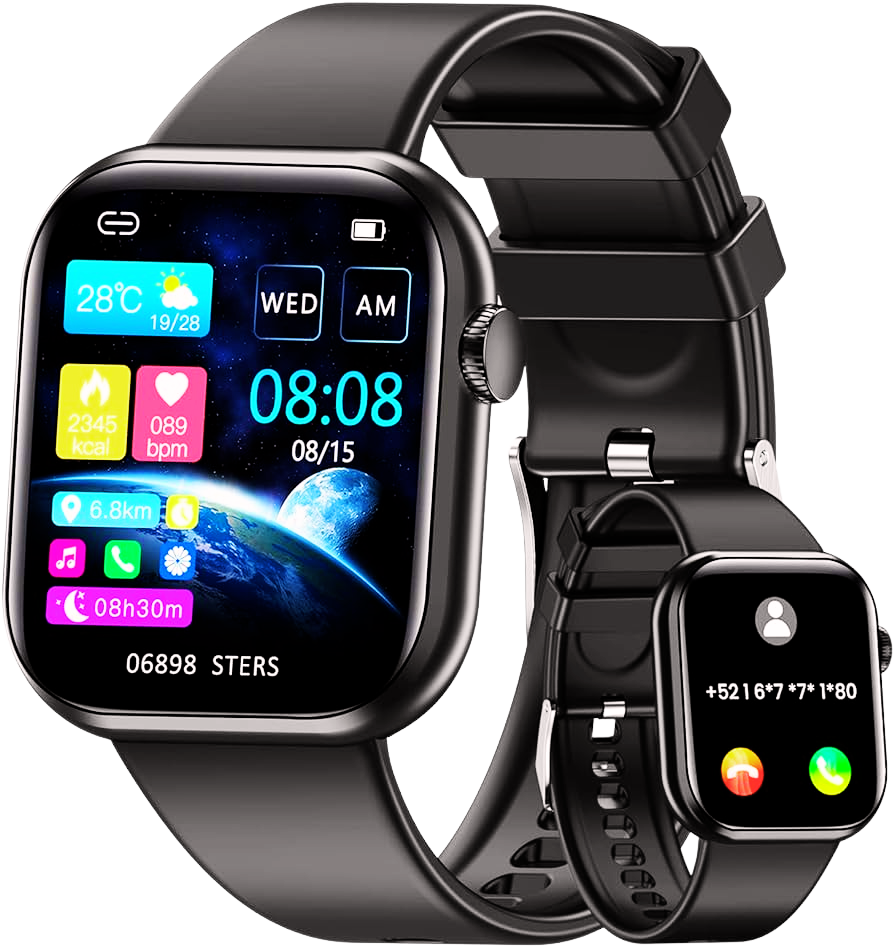

Smart Jack

- • Pantalla de alta resolución y calidad, con tecnología OLED o AMOLED para una visualización nítida y vivida.
- • Características avanzadas de seguimiento de la salud y el estado físico, como ECG, oxigeno de pulso, seguimiento avanzado del sueño, etc.
- • Diseño premium con materiales de alta calidad como acero inoxidable, titanio o cerámica.
- • Conectividad avanzada, incluyendo WiFi, Bluetooth, y en algunos casos, conectividad celular independiente
- • Duración de la batería prolongada con modos de ahorro de energía y carga rápida
- • Personalización avanzada con opciones de esferas de reloj personalizables y correas intercambiables de alta calidad.
- • Funciones adicionales como pagos móviles, control de música, notificaciones avanzadas, etc